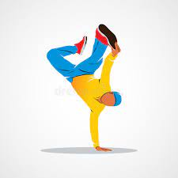

HIPHOP
LOCKING
Locking is a style of funk dance, which is today also associated with hip hop. The name is based on the concept of locking movements, which means freezing from a fast movement and "locking" in a certain position, holding that position for a short while and then continuing at the same speed as before. It relies on fast and distinct arm and hand movements combined with more relaxed hips and legs. The movements are generally large and exaggerated, and often very rhythmic and tightly synced with the music.
POPPING
Popping is a street dance adapted out of the earlier Boogaloo (funk dance) cultural movement in Oakland, California. As Boogaloo spread, it would be referred to as Robottin in Richmond, California, Strutting movements in San Francisco and San Jose, and the Strikin dances of the Oak Park community of Sacramento which were popular through the mid-1960s to the 1970s.The dance is rooted through the rhythms of live funk music, and is based on the technique of Boogaloo's posing approach, quickly contracting and relaxing muscles to cause a jerk or can be a sudden stop in the dancer's body, referred to as a pose, pop or a hit.